MyMechanics Tutorial
This tutorial is a hands-on walk-through for your first session with MyMechanics. Starting from an empty window you will build a first part — sketch, dimensions, extrude, fillet, hole and pattern — and then try a sweep, sheet metal, an assembly with mates, a motion study, a drawing with a section view and a bill of materials, and a static simulation. Every step has a picture of the screen at that moment; the red numbers show where to click or what to look at.
The whole tutorial takes about an hour. The lessons stand on their own, except that lessons 1–4 build the same part and lesson 9 makes its drawing. The user's guide (F1) explains every command in detail.
Lesson 1. A first sketch — a rectangle and its dimensions
Every part starts from a 2D sketch on a plane: draw the lines, then fix their size and position with relations and dimensions.
- Click New part on the start page, or press Ctrl+N. An empty part opens with the Front, Top and Right planes and the origin in the tree.
- On the Features tab of the CommandManager, click Sketch. When the sketch PropertyManager appears on the left, choose Top Plane. Clicking the plane in the graphics area works too.

Picking the plane to sketch on - The view turns to face the Top plane and the CommandManager switches to the Sketch tab. Click Center Rectangle, click the origin first, then click a corner further out. When the pointer snaps to the origin an orange ring appears and a coincident relation is added by itself.

A center rectangle started at the origin - The lines are still blue: their size is not fixed yet, so they can move. Click Smart Dimension (D), click the horizontal line and enter
80, then the vertical line and enter50. When every line turns black and the status bar says Fully defined, you are done.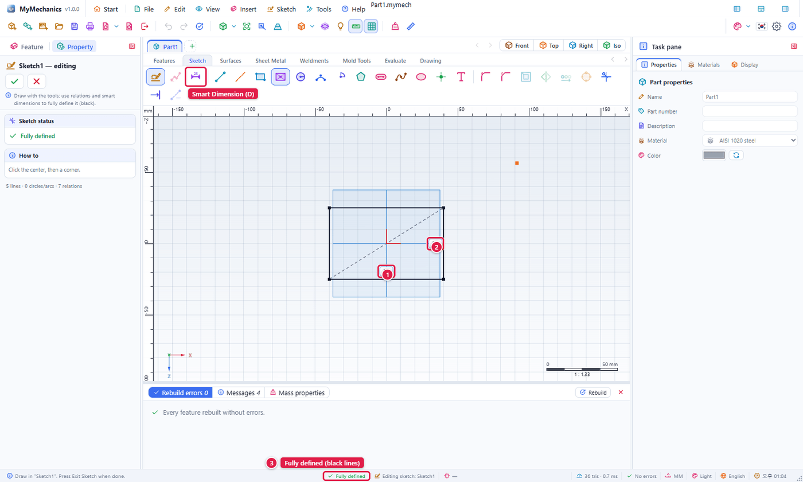
The sketch fully defined by two dimensions - Click Exit Sketch. Sketch1 appears in the tree.
Double-click a dimension's text to change its value. Number boxes accept arithmetic and units, such as
100/3or25.4in.
Lesson 2. Extrude — from sketch to solid
- With Sketch1 selected, click Features › Extruded Boss.
- Enter
20for the depth in the PropertyManager. A yellow preview shows in the graphics area; tick the reverse box to flip it. - Press ✔ (Enter). Boss-Extrude1 appears in the tree with Sketch1 under it.

The extrude PropertyManager and its preview
Turn the view with a left drag, move it with a right drag and zoom with the wheel. F fits everything on the screen; Ctrl+7 is the isometric view.
Lesson 3. Fillets and a hole
Rounding the edges
- Click Fillet.
- Click the vertical edges of the block one by one. The picked edges collect in the pink selection box; turn the view to reach the one at the back. Clicking a face adds all of its edges at once.
- Enter a radius of
5and press ✔.
Fillet — the picked edges and the radius
A counterbored hole
- Click Hole Wizard.
- Choose Counterbore as the hole type and M8 as the size. The clearance diameter and the counterbore for the screw head are filled in from the standard table.
- Click the top face of the block to the right of the origin (about 15 mm along X). The red preview is the hole. Leave the end condition at Through All.
- Press ✔. The hole position is kept in a Hole position sketch, so you can add dimensions to it later to place it exactly.
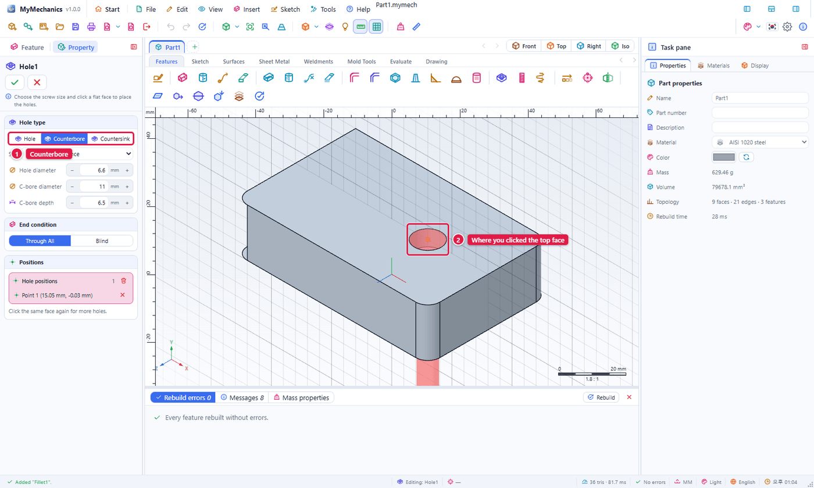
Hole Wizard — counterbore M8
Lesson 4. Patterns — four holes
Instead of drawing more holes, copy the first one with a pattern: when you change the original, the copies follow.
- Click Hole1 in the tree to select it.
- Click Circular Pattern. Hole1 is already in the list of features to pattern.
- Set the axis to Y, the total angle to
360, the number of instances to4, and tick Equal spacing. - Press ✔: four holes now sit around the origin.
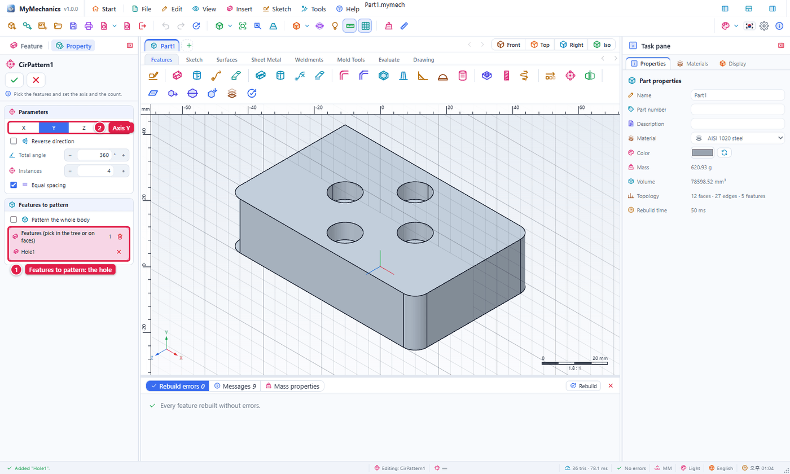
Circular pattern — axis Y, 4 instances - Save with Ctrl+S. Parts, assemblies and drawings all go into one
.mymechfile.
The tree lists the features in the order they were made. Double-click one to edit it again; change a dimension early in the tree and the fillets, hole and pattern after it are all rebuilt on the new shape. Drag the blue rollback bar at the bottom of the tree upwards to leave out the features below it for a while.

Lesson 5. Sweep — a tube along a path
A sweep moves a closed profile along a path. Use it for bent tubes, handles and springs.
- Open a new part (Ctrl+N).
- Open a sketch on the Top Plane and draw two circles centred on the origin. Diameters
16and12make the section of a tube with a 2 mm wall. Exit the sketch and rename it Profile (F2). - Open a sketch on the Front Plane and draw lines from the origin: 60 mm up, then up and to the right at a slant, then level. An open chain is fine. Exit the sketch and rename it Path.
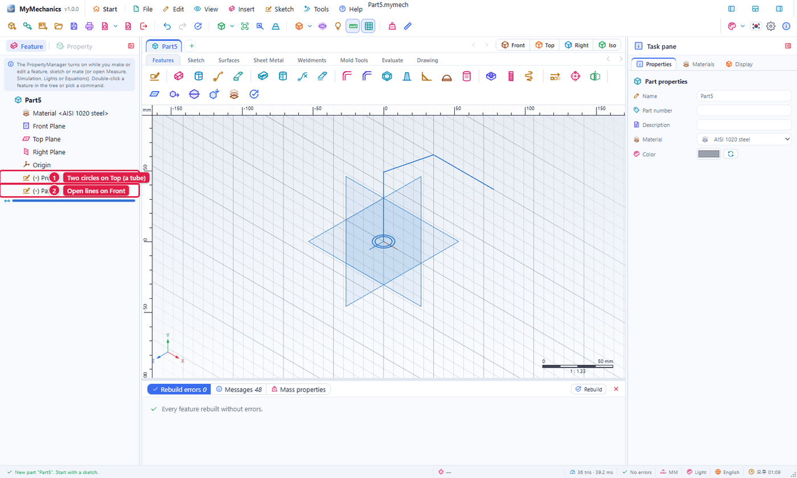
The profile (two circles on Top) and the path (open lines on Front) - Click Swept Boss. Pick the Profile sketch as the profile and the Path sketch as the path. The profile must lie at the start of the path, square to it.
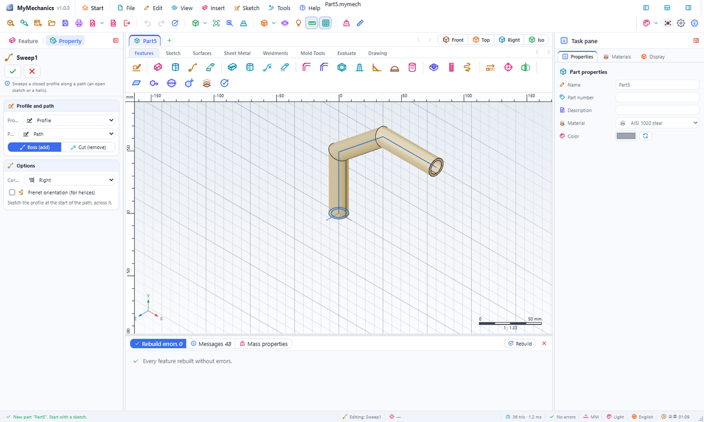
The sweep PropertyManager — profile and path - Press ✔: the tube follows the bends of the path.
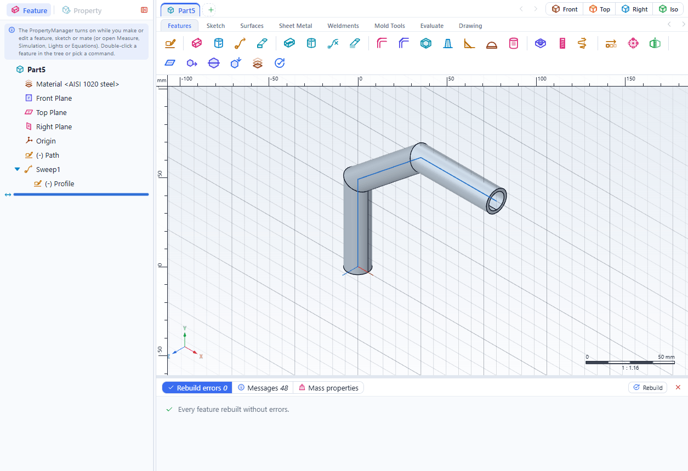
The finished swept tube
With a Helix (Features › Helix) as the path and Frenet orientation turned on, the same command makes a spring. Open the Compression spring sample to see one.
Lesson 6. Sheet metal — flanges and the flat pattern
A sheet metal part is a plate of constant thickness bent into shape. You can switch between the formed part and its flat pattern.
- Open a new part, sketch a 120 × 70 rectangle on the Top Plane and exit the sketch.
- On the CommandManager's Sheet Metal tab, click Base Flange. Check the thickness, bend radius and K-factor, then press ✔.
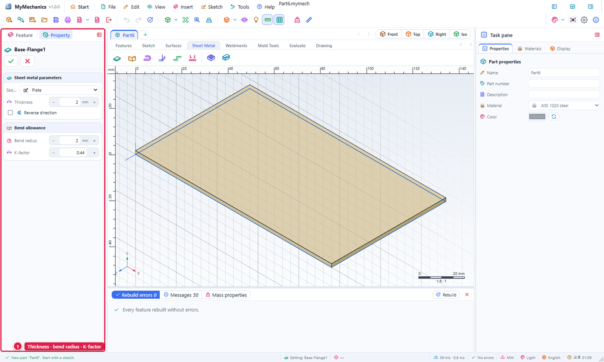
Base flange — thickness, bend radius and K-factor - Click the short edge on the right of the sheet's top face to select it, then click Edge Flange. With an angle of
90and a length of35the preview appears. ✔.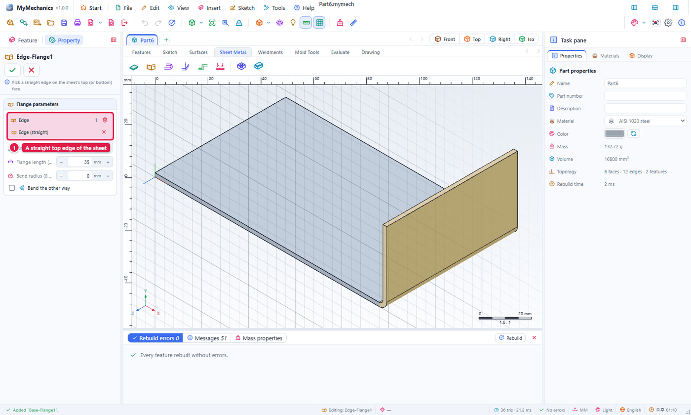
Edge flange — standing up 90° from the picked edge - Click Flatten. The flat pattern appears, worked out with the bend allowance (angle × (radius + K × thickness)). Click it again to fold the part back.
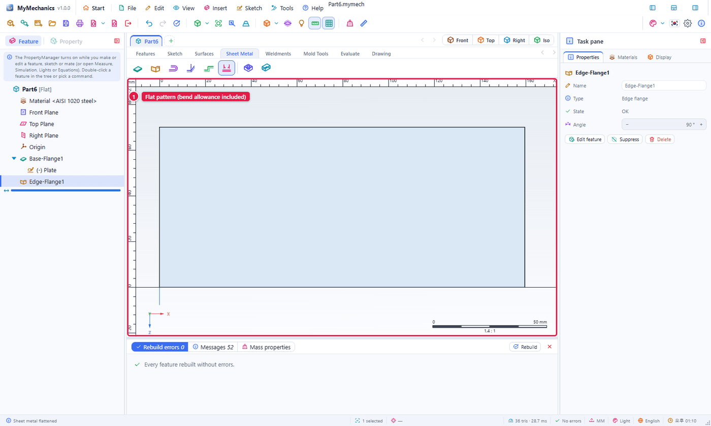
The flat pattern
Hems, sketched bends and jogs are on the same tab. The Sheet metal chassis sample uses all of them.
Lesson 7. An assembly with mates
An assembly holds parts that are placed by mates — relations between their faces.
- Click New assembly. The left panel lists the project's parts and the sample parts; click one to put it into the graphics area. The first part is fixed at the origin (
(f)).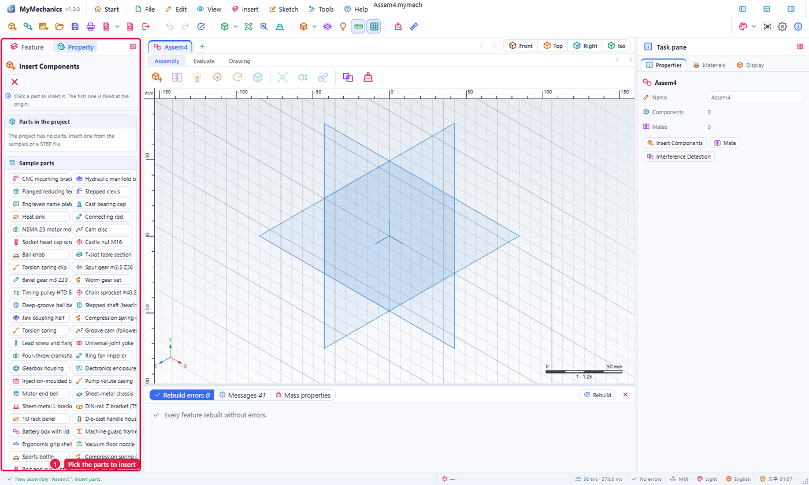
A new assembly — picking the parts to insert - Insert a second part with Assembly › Insert Components. A component that has no mates yet can move freely and gets a
(-). - Click Mate and click a cylindrical face on each part. For two cylinders Concentric is suggested first, and the part moves into place at once. Press ✔. Pick two flat faces next and Coincident is suggested.
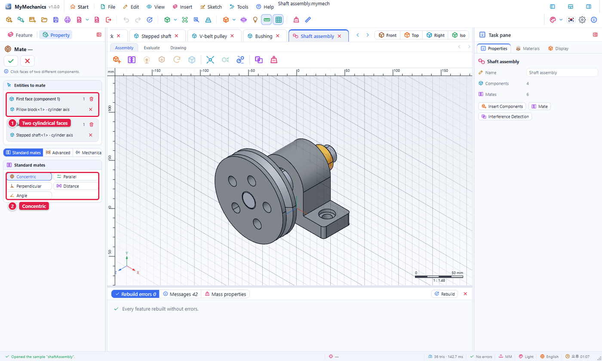
Mate — two cylindrical faces made concentric - The mates collect in the Mates folder of the tree. Components whose position is fully set lose their
(-); mates that cannot all be met turn red.
The assembly tree and the Mates folder
Open the Shaft assembly and Two-stage gear reducer samples to see finished mates. The Advanced and Mechanical buttons of the mate PropertyManager hold width and limit mates, and gear, rack-and-pinion, screw and hinge mates.
Lesson 8. A motion study
Components linked by gear, screw or rack-and-pinion mates move together, driven by a single motor.
- Open the Two-stage gear reducer sample (start page › Samples › Assemblies).
- Click Assembly › Motion Study. This sample already has a rotary motor on its input shaft; to add a motor, click a cylindrical face of a component (rotary motors in rpm, linear motors in mm/s).
- Press Play, or drag the time slider to any moment. As the input shaft turns, the intermediate and output shafts follow through the gear mates at the gear ratio.
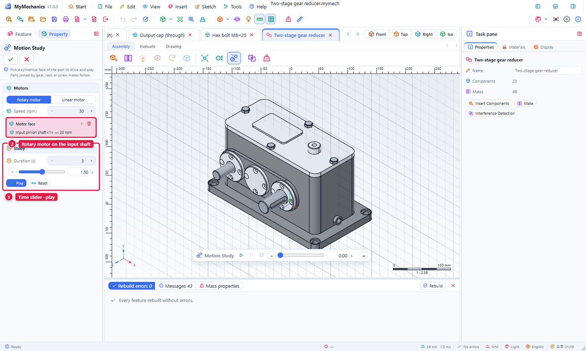
Motion study — the motor and the time slider - Exploded View spreads the components outward; click it again to put them back.
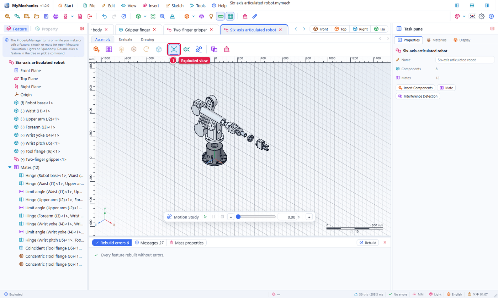
The six-axis robot sample, exploded
Lesson 9. Drawings — a section view and a bill of materials
- Go back to the tab of the part from lessons 1–4 and click Drawing › Make drawing. The front, top and right views and an isometric view are placed on an A3 sheet at a scale chosen to fit. Change the sheet size, scale and projection in the task pane on the right.

A new drawing — the standard three views and an isometric view - Click the front view to select it and click Section View. Section A-A, cut through the middle and hatched, is placed on the sheet, and the cutting line and arrows are drawn on the front view.
- Detail View adds detail B, the chosen area at twice the scale. Drag views to move them.
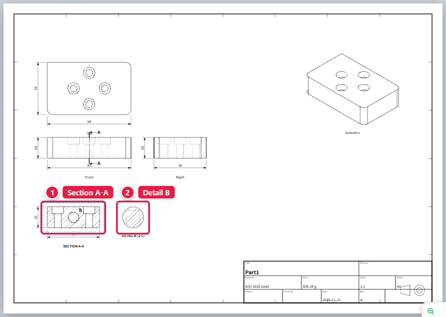
Section A-A and detail B - Make a drawing of an assembly and click BOM: a table of item numbers, names, materials and quantities is placed above the title block.
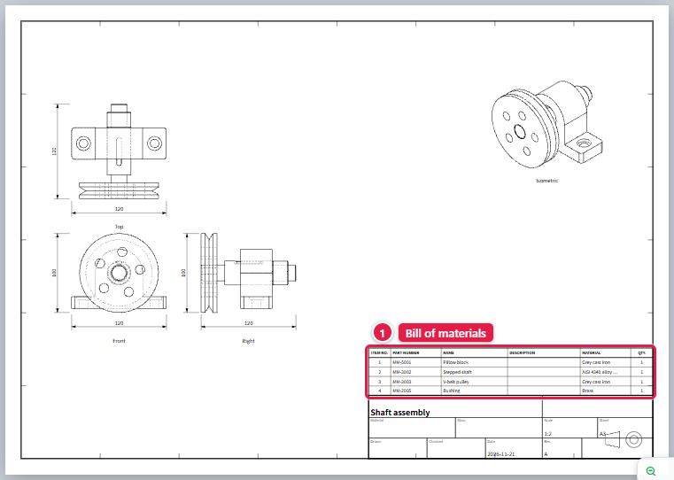
The bill of materials of an assembly drawing - Export to DXF or SVG, or print with Ctrl+P. Geometric tolerances, datums, surface finish symbols and balloons are added with the annotation buttons of the Drawing tab.
Lesson 10. A static simulation
- Open the part to analyse and click Evaluate › Simulation. The study type is Static; the material's elastic modulus and yield strength are shown in the PropertyManager.
- Click the Fixed faces box and click the face to hold (the one against the wall). Then click the Loaded faces box and click the face that takes the force.
- Enter a force of
200N and choose the direction −Y. A higher resolution is more accurate but takes longer.
Setting up — fixed face, load face and force - Click Run. The body is colored by von Mises stress (blue → red), and the maximum stress, maximum displacement and minimum factor of safety are listed. A factor of safety below 1 means the part yields. Turn on Show deformed shape to see the bending, exaggerated.
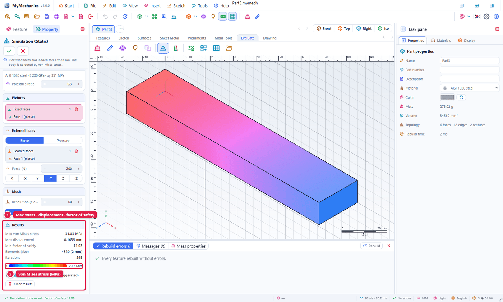
Static results — stress distribution and factor of safety
Switch the study type to Thermal for a temperature distribution, or to Frequency for natural frequencies and mode shapes. See chapter 8 of the user's guide.
Where next
You have now been through the main workflow of MyMechanics. Open the 75 samples on the start page (basic parts, machine elements, housings, advanced, assemblies and drawings) and double-click their features in the tree one by one to see how each command was used. Every command and option is described in the user's guide.